Petite Dent es el consultorio de la Dra. Joanne Mendoza, dedicado por completo a niños y bebés: desde su primer diente hasta que su sonrisa termina de crecer.
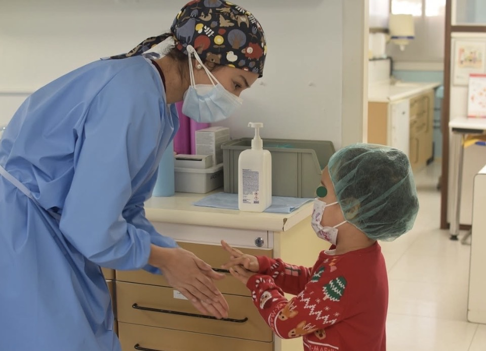
De la primera limpieza a la ortodoncia que guía la mordida — cada servicio existe para resolver una necesidad concreta de tu hijo, sin apuros.
Para que no duela. La mayoría de las visitas en Petite Dent son de este tipo: cuidar hoy para evitar tratamientos mañana.
Si la caries ya apareció, la resolvemos con calma y sin dramatismo — priorizando siempre salvar el diente.
Lo justo, en manos especialistas — solo cuando realmente hace falta.
¿Se cayó? ¿Le duele? Te atendemos. Ver más abajo la sección de emergencias dentales.
Guiamos la mordida mientras el maxilar todavía está creciendo — muchas veces evita una ortodoncia más larga después.
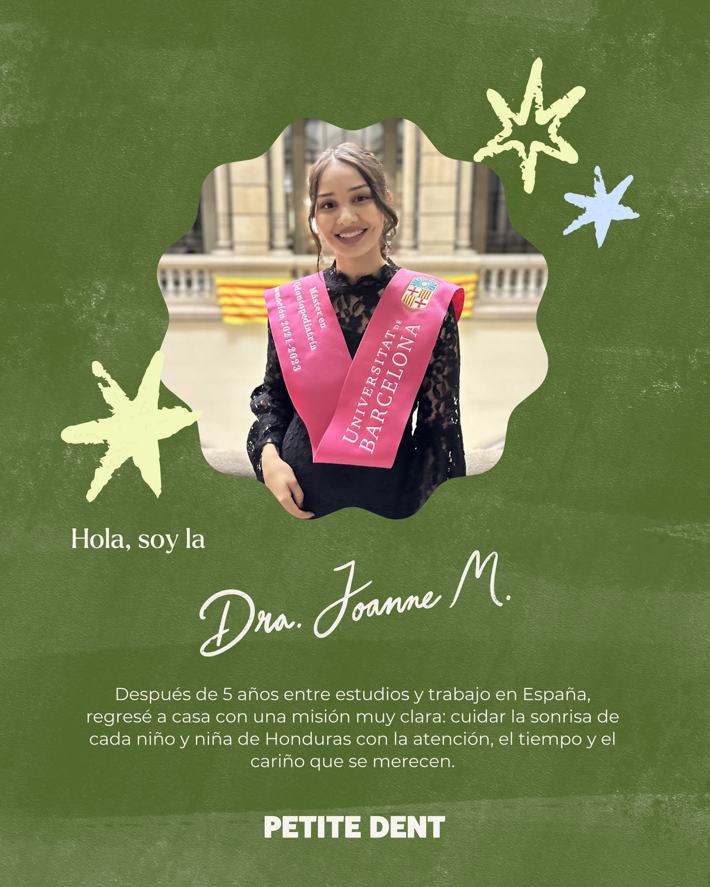
Cada niño que se sienta en el sillón llega con su propio ritmo, y mi trabajo es respetarlo: ganarme su confianza antes de tocar un solo diente. Cuando un niño sale contento de su cita, gana él, gana su familia, y gana toda una vida sin miedo al dentista.
Sabemos que como papá o mamá también te da un poco de nervio. Así se siente normalmente una primera cita en Petite Dent.
Tu hijo conoce el espacio y al equipo antes de sentarse en el sillón. Nada empieza hasta que se sienta cómodo.
La Dra. Mendoza explica cada paso con palabras que un niño entiende, y se detiene si hace falta.
Puedes acompañar a tu hijo durante la consulta; la meta es que ambos salgan tranquilos.
Te llevas indicaciones simples de cuidado e higiene, y sabes exactamente cuándo volver.
Colores suaves, detalles cuidados y un ambiente que invita a sentirse en casa desde la primera visita.
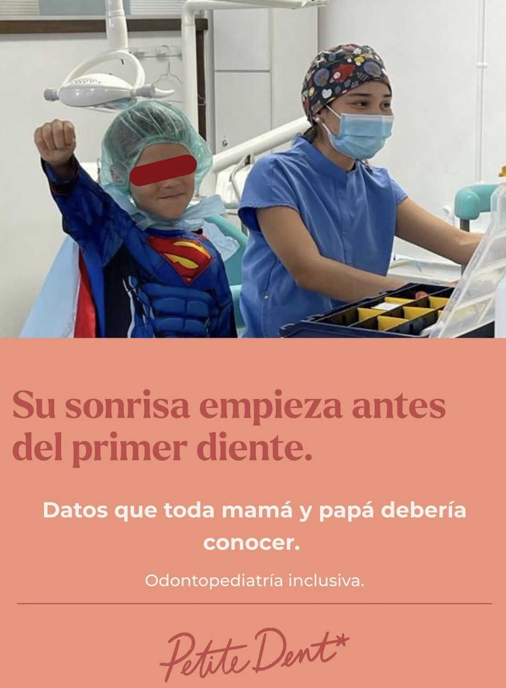
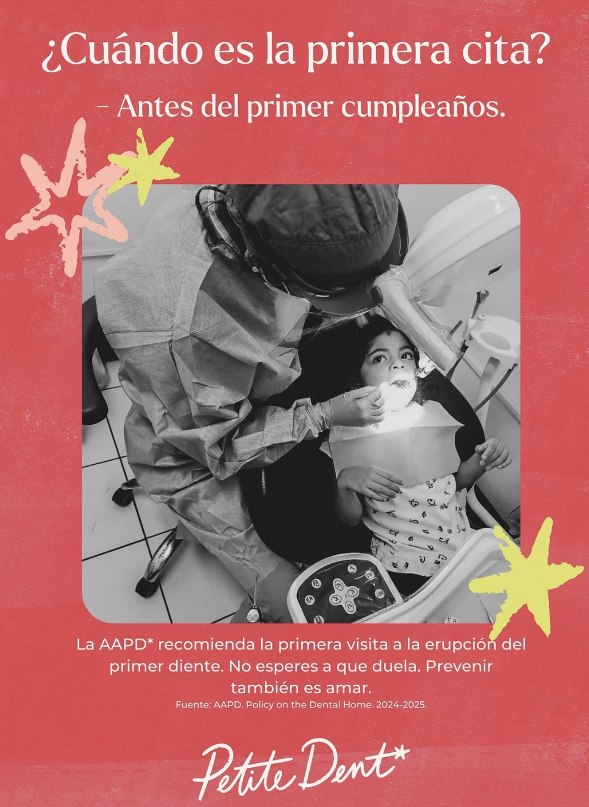
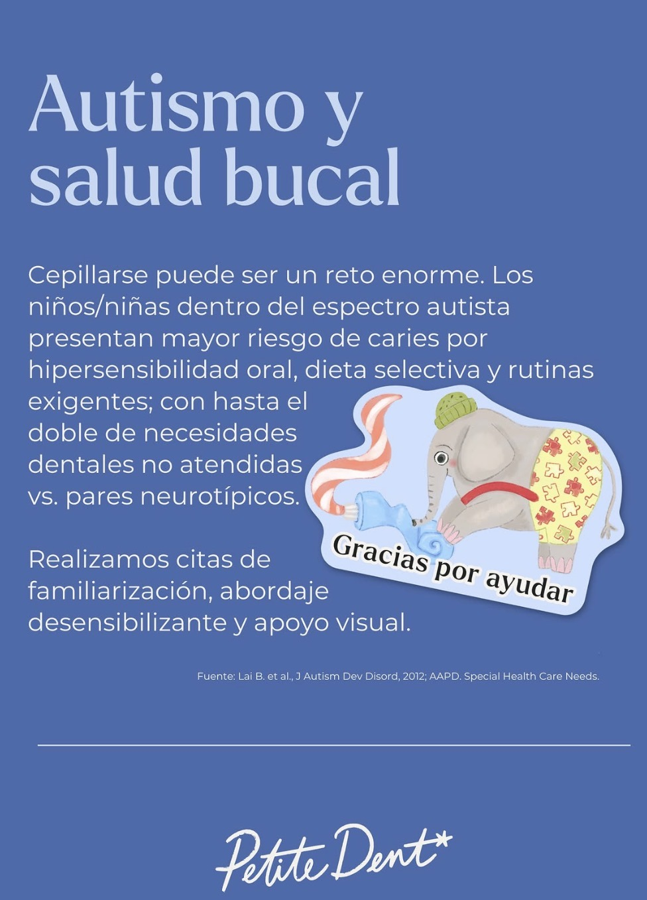
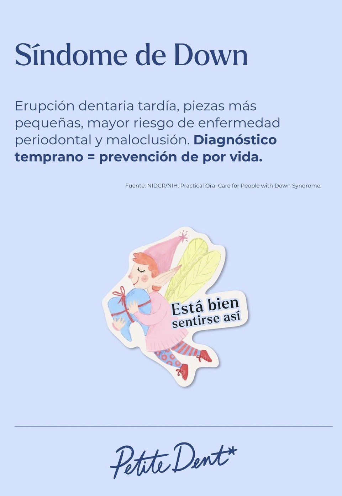
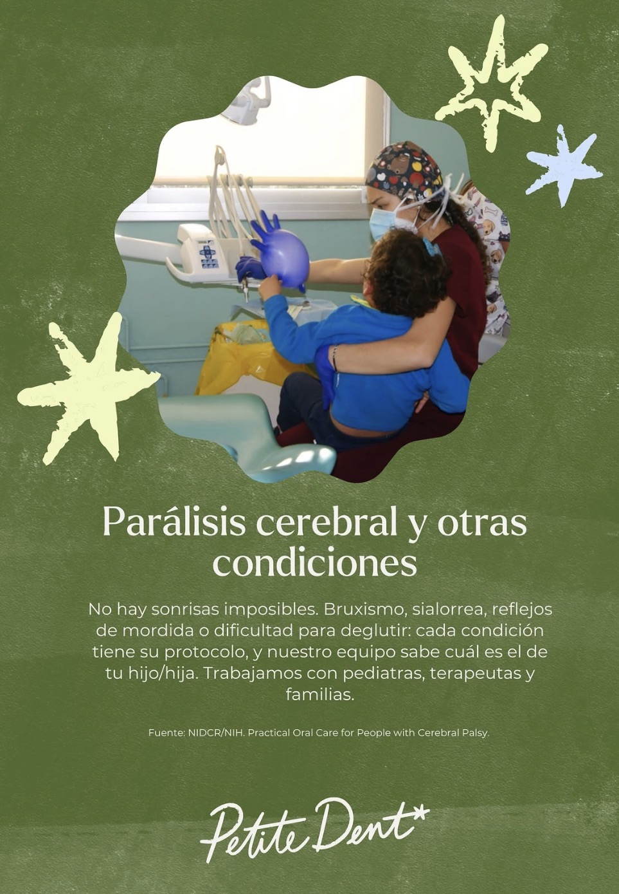
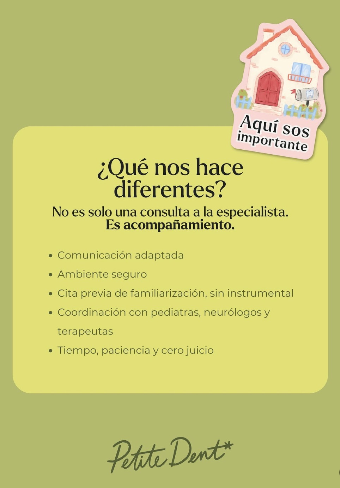
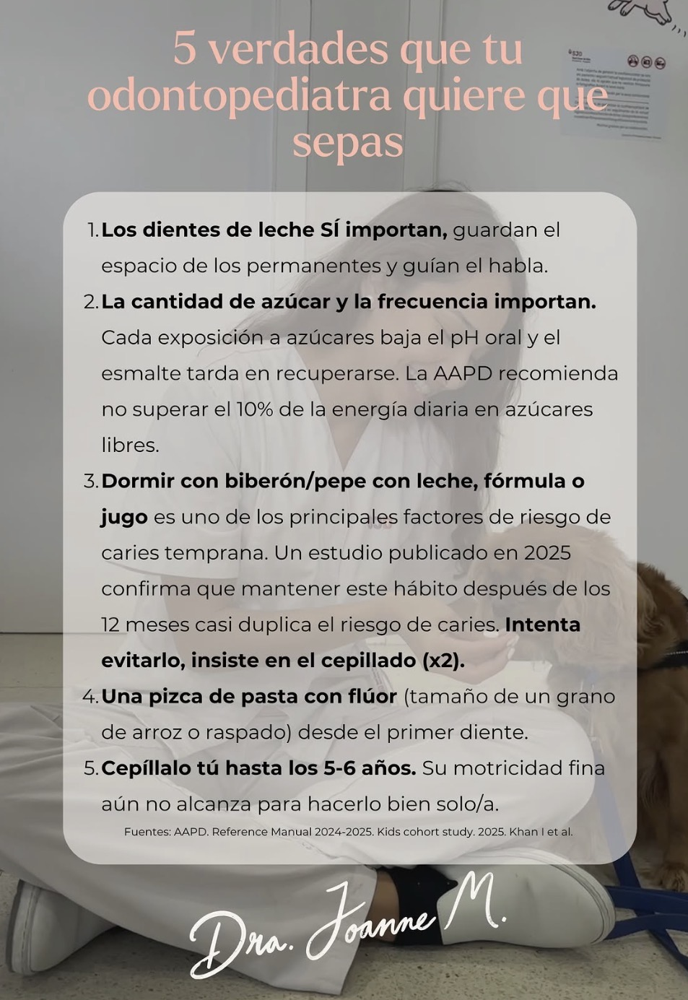
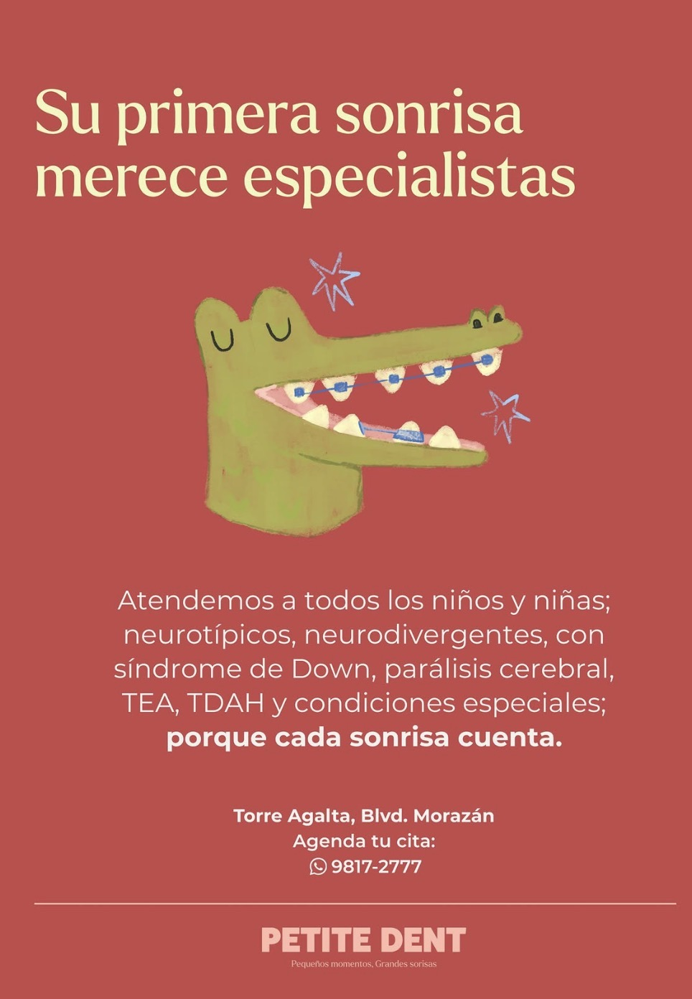
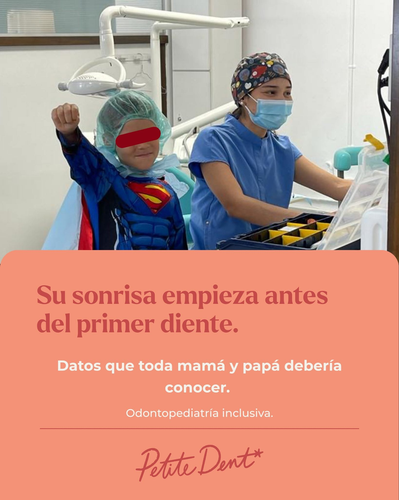
"La atención fue amable y muy profesional — mis hijas se sintieron completamente cómodas durante toda la cita. Se nota el cuidado en la limpieza y organización del consultorio."
"Llevamos a nuestro bebé de 14 meses a su primera visita y se notó lo mucho que la doctora disfruta su trabajo — el cuidado al tratarlo nos dio mucha tranquilidad."
"Después de consultar con varios especialistas que no manejaban bien su caso, encontramos en la Dra. Mendoza a alguien paciente y clara en sus explicaciones. Una experiencia única."
Lo ideal es que la primera visita sea cerca de la salida del primer diente o antes del primer año. No hace falta esperar a que aparezca un problema — entre antes, más fácil es que tu hijo se sienta cómodo con el consultorio.
La mayoría de las citas son de prevención y no duelen en absoluto. Cuando un tratamiento sí lo requiere, se explica cada paso a la altura del niño y se avanza solo cuando está listo, priorizando siempre su comodidad.
Las citas de prevención y adaptación suelen durar entre 20 y 40 minutos. Tratamientos más específicos pueden tomar más tiempo; te lo indicamos al agendar según el caso de tu hijo.
Aceptamos seguros como BAC y Ficohsa. Escríbenos por WhatsApp con los datos de tu póliza o pregúntanos por otras opciones de pago — te confirmamos qué aplica para tu caso antes de la cita.
Es más común de lo que parece. Usamos citas de adaptación para que el niño conozca el espacio sin presión, vamos a su ritmo, y tú puedes acompañarlo durante toda la consulta.
Escríbenos por WhatsApp apenas ocurra el golpe o dolor — te indicamos los primeros pasos y la disponibilidad más cercana para atenderlo.
Aceptamos seguros BAC y Ficohsa. Escríbenos con tu caso por WhatsApp y te confirmamos qué cobertura u opciones de pago aplican, sin compromiso.
Un golpe en la boca o un dolor repentino da miedo, pero actuar rápido hace la diferencia. Contáctanos apenas ocurra y te guiamos en los primeros pasos mientras te atendemos.
Escríbenos hoy y encontramos el mejor momento para conocer a tu hijo en un espacio pensado solo para él.